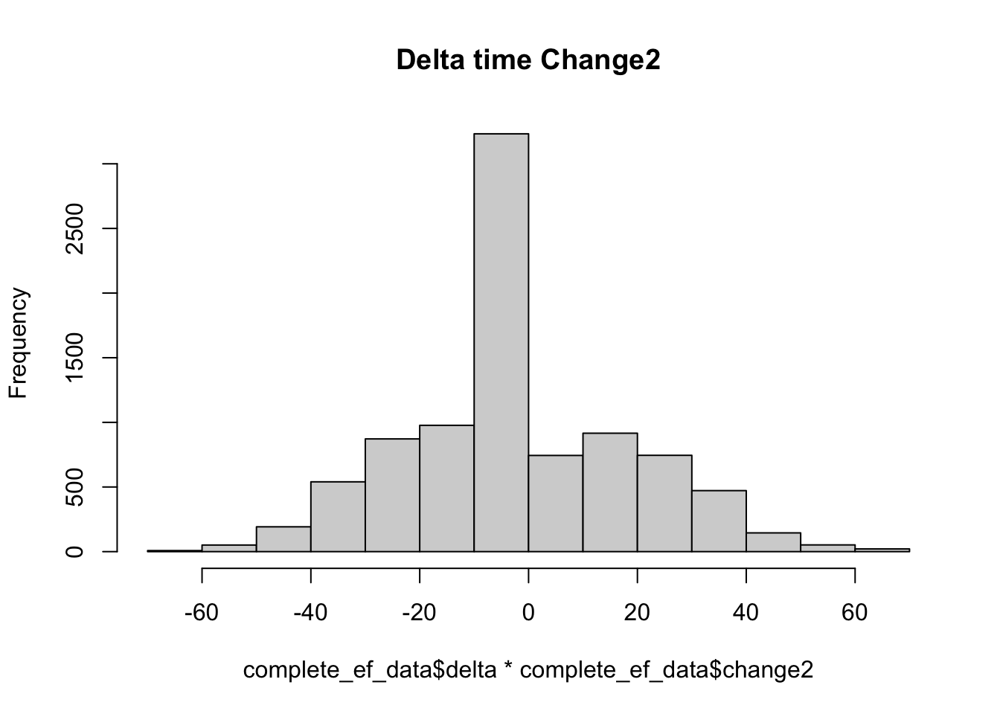

Last updated: 2021-05-21
Checks: 7 0
Knit directory: hfproject/
This reproducible R Markdown analysis was created with workflowr (version 1.6.2). The Checks tab describes the reproducibility checks that were applied when the results were created. The Past versions tab lists the development history.
Great! Since the R Markdown file has been committed to the Git repository, you know the exact version of the code that produced these results.
Great job! The global environment was empty. Objects defined in the global environment can affect the analysis in your R Markdown file in unknown ways. For reproduciblity it’s best to always run the code in an empty environment.
The command set.seed(20210219) was run prior to running the code in the R Markdown file. Setting a seed ensures that any results that rely on randomness, e.g. subsampling or permutations, are reproducible.
Great job! Recording the operating system, R version, and package versions is critical for reproducibility.
Nice! There were no cached chunks for this analysis, so you can be confident that you successfully produced the results during this run.
Great job! Using relative paths to the files within your workflowr project makes it easier to run your code on other machines.
Great! You are using Git for version control. Tracking code development and connecting the code version to the results is critical for reproducibility.
The results in this page were generated with repository version 81f78e3. See the Past versions tab to see a history of the changes made to the R Markdown and HTML files.
Note that you need to be careful to ensure that all relevant files for the analysis have been committed to Git prior to generating the results (you can use wflow_publish or wflow_git_commit). workflowr only checks the R Markdown file, but you know if there are other scripts or data files that it depends on. Below is the status of the Git repository when the results were generated:
Ignored files:
Ignored: .DS_Store
Ignored: .Rhistory
Ignored: data/.DS_Store
Untracked files:
Untracked: data/full_ef.txt
Untracked: data/ms_hf.csv
Note that any generated files, e.g. HTML, png, CSS, etc., are not included in this status report because it is ok for generated content to have uncommitted changes.
These are the previous versions of the repository in which changes were made to the R Markdown (analysis/hf.Rmd) and HTML (docs/hf.html) files. If you’ve configured a remote Git repository (see ?wflow_git_remote), click on the hyperlinks in the table below to view the files as they were in that past version.
| File | Version | Author | Date | Message |
|---|---|---|---|---|
| html | 81f78e3 | Your Name | 2021-05-21 | Build site. |
| Rmd | 62cd2c6 | Your Name | 2021-05-21 | wflow_publish(“analysis/hf.Rmd”) |
| html | d74f87a | Your Name | 2021-05-21 | Build site. |
| Rmd | 6e7642b | Your Name | 2021-05-21 | wflow_publish(“analysis/hf.Rmd”) |
| html | 0e70d77 | Your Name | 2021-05-18 | Build site. |
| Rmd | c9ac48c | Your Name | 2021-05-18 | wflow_publish(“analysis/hf.Rmd”) |
| Rmd | 4baec70 | Your Name | 2021-05-18 | update |
| html | 4baec70 | Your Name | 2021-05-18 | update |
| html | fa84d12 | Your Name | 2021-03-16 | Build site. |
| Rmd | 8a4c006 | Your Name | 2021-03-16 | wflow_publish(“analysis/hf.Rmd”) |
| html | 446eb53 | Your Name | 2021-03-12 | Build site. |
| Rmd | 709d105 | Your Name | 2021-03-12 | wflow_git_commit(“analysis/hf.Rmd”) |
| html | b6a2b29 | Your Name | 2021-02-27 | Build site. |
| Rmd | 3422387 | Your Name | 2021-02-27 | Add my first analysis |
| html | 198089e | Your Name | 2021-02-27 | Build site. |
| html | 47f3a69 | Your Name | 2021-02-27 | Build site. |
| Rmd | d15907e | Your Name | 2021-02-27 | wflow_publish(“~/hfproject/analysis/hf.Rmd”) |
Here we organize the data frame for preliminary analysis.
library("workflowr")
df=read.csv("data/ms_hf.csv")
good_df=df[,c("X","Age.of.Death","Gender","Initial.BP..SYSTOLIC","Earliest..Creatinine1")]
#names(df)
ef_min=df[,grep(names(df),pattern = "EF_Min")]
##looks like
df_min=df[,c("EF_Min..EF","EF_Min..LVEjectionFraction2D","EF_Min..EF","EF_Min..LVEjectionFraction2D","EF_Min..LVEFModSimpBiPlane","EF_Min..EstimatedEF")]
mean_ef_min=apply(df_min,1,function(x){
x=as.numeric(x)
mean(na.omit(x))})
ef_max=df[,grep(names(df),pattern = "EF_Max")]
#names(ef_max)
ef_max=df[,c("EF_Max..EF","EF_Max..LVEjectionFraction2D","EF_Max..EF","EF_Max..LVEjectionFraction2D","EF_Max..LVEFModSimpBiPlane","EF_Max..EstimatedEF")]
mean_ef_max=apply(ef_max,1,function(x)
{x=as.numeric(x)
mean(na.omit(x))
})
full_ef=data.frame(good_df,mean_ef_max,mean_ef_min)
write.table(full_ef,"data/full_ef.txt")Here I extract and convert dates:
library("lubridate")
Attaching package: 'lubridate'The following objects are masked from 'package:base':
date, intersect, setdiff, unionef_max_date=mdy(df[,"EF_Max.EchoDate"])
ef_min_date=mdy(df[,"EF_Min..EchoDate"])
###check to see that they overlap
which(is.na(ef_max_date)) [1] 309 839 2993 3871 4030 4117 4179 4230 4300 4346 4367 4841 4889 4993 5306
[16] 5610 5626 5874 5950 6199 6206 6440 6707 7058 7174 7250 7260 7310 7350 7368
[31] 7651 8936 8989 9001 9002 9003which(is.na(df$EF_Max.EchoDate)) [1] 309 839 2993 3871 4030 4117 4179 4230 4300 4346 4367 4841 4889 4993 5306
[16] 5610 5626 5874 5950 6199 6440 6707 7058 7174 7250 7260 7310 7350 7368 7651
[31] 8936 8989d=ef_max_date-ef_min_date
change=ifelse(d<0,-1,d)###return negative 1 if change in EF is negative
change2=ifelse(change>0,1,change)###return positive if change in EF is positive
cbind(d,change2)[1:100,]## check to make sure encoded properly d change2
[1,] 0 0
[2,] 0 0
[3,] -1046 -1
[4,] 0 0
[5,] 0 0
[6,] 0 0
[7,] -617 -1
[8,] -645 -1
[9,] 0 0
[10,] -723 -1
[11,] 0 0
[12,] 0 0
[13,] -181 -1
[14,] -328 -1
[15,] 265 1
[16,] 0 0
[17,] -935 -1
[18,] -7 -1
[19,] -503 -1
[20,] 140 1
[21,] 2031 1
[22,] -162 -1
[23,] -198 -1
[24,] -1026 -1
[25,] 0 0
[26,] -51 -1
[27,] -125 -1
[28,] 0 0
[29,] 565 1
[30,] 0 0
[31,] -1169 -1
[32,] 723 1
[33,] -226 -1
[34,] 0 0
[35,] 279 1
[36,] -1438 -1
[37,] 0 0
[38,] 129 1
[39,] -342 -1
[40,] -257 -1
[41,] 406 1
[42,] -490 -1
[43,] 0 0
[44,] 454 1
[45,] 0 0
[46,] -948 -1
[47,] 28 1
[48,] 479 1
[49,] -776 -1
[50,] 139 1
[51,] 503 1
[52,] 0 0
[53,] -805 -1
[54,] 0 0
[55,] 0 0
[56,] -146 -1
[57,] 0 0
[58,] 843 1
[59,] -234 -1
[60,] -427 -1
[61,] 250 1
[62,] 78 1
[63,] 0 0
[64,] -105 -1
[65,] -2184 -1
[66,] 0 0
[67,] 0 0
[68,] 0 0
[69,] 153 1
[70,] -456 -1
[71,] 928 1
[72,] 287 1
[73,] 569 1
[74,] -1122 -1
[75,] -274 -1
[76,] -38 -1
[77,] 0 0
[78,] 0 0
[79,] 0 0
[80,] 0 0
[81,] -564 -1
[82,] -65 -1
[83,] 783 1
[84,] 10 1
[85,] -727 -1
[86,] 1030 1
[87,] 0 0
[88,] -436 -1
[89,] -103 -1
[90,] 0 0
[91,] 281 1
[92,] -207 -1
[93,] -694 -1
[94,] -137 -1
[95,] -562 -1
[96,] -116 -1
[97,] -224 -1
[98,] 0 0
[99,] 0 0
[100,] -663 -1Here we divide the table into those with improved EF and no change in EF
delta=mean_ef_max-mean_ef_min
full_ef=cbind(full_ef,delta,change2)
full_ef$Gender=as.factor(full_ef$Gender)
## indicate positive and negative date
complete_ef_data=full_ef[!is.na(full_ef$change2),]##only pull out the ones with two dates
###now plot real delta
hist(complete_ef_data$delta*complete_ef_data$change2,main="Delta")
##This many are improving
sum(complete_ef_data$change2==1)[1] 3095##this many are getting worse
sum(complete_ef_data$change2==-1)[1] 3339table(change2)change2
-1 0 1
3339 2533 3095 As we can see, no huge apparent differences in initital creatining and BP or gender composition.
sessionInfo()R version 4.0.2 (2020-06-22)
Platform: x86_64-apple-darwin17.0 (64-bit)
Running under: macOS 10.16
Matrix products: default
BLAS: /Library/Frameworks/R.framework/Versions/4.0/Resources/lib/libRblas.dylib
LAPACK: /Library/Frameworks/R.framework/Versions/4.0/Resources/lib/libRlapack.dylib
locale:
[1] en_US.UTF-8/en_US.UTF-8/en_US.UTF-8/C/en_US.UTF-8/en_US.UTF-8
attached base packages:
[1] stats graphics grDevices utils datasets methods base
other attached packages:
[1] lubridate_1.7.10 workflowr_1.6.2
loaded via a namespace (and not attached):
[1] Rcpp_1.0.5 rstudioapi_0.13 whisker_0.4 knitr_1.30
[5] magrittr_2.0.1 R6_2.5.0 rlang_0.4.11 stringr_1.4.0
[9] tools_4.0.2 xfun_0.18 git2r_0.28.0 htmltools_0.5.0
[13] ellipsis_0.3.1 rprojroot_2.0.2 yaml_2.2.1 digest_0.6.27
[17] tibble_3.0.4 lifecycle_0.2.0 crayon_1.3.4 later_1.1.0.1
[21] vctrs_0.3.8 promises_1.1.1 fs_1.5.0 glue_1.4.2
[25] evaluate_0.14 rmarkdown_2.4 stringi_1.5.3 compiler_4.0.2
[29] pillar_1.4.7 generics_0.0.2 httpuv_1.5.4 pkgconfig_2.0.3